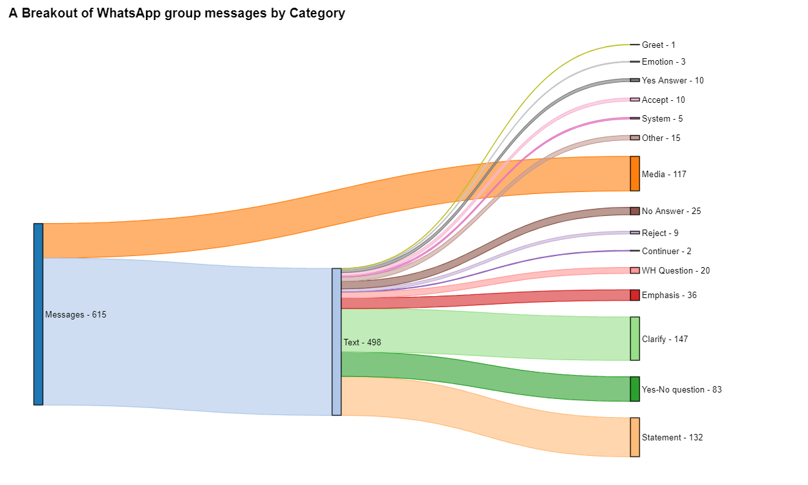
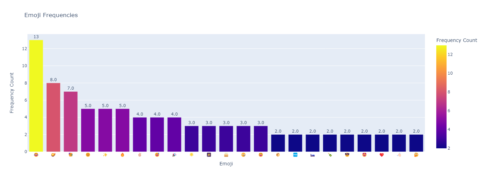
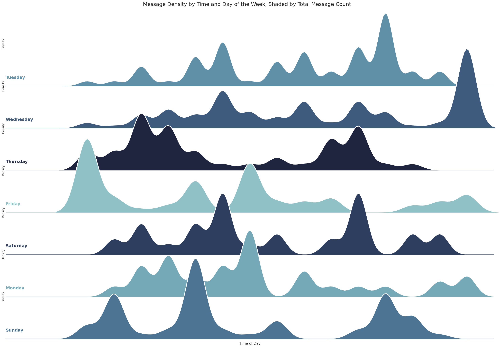

Introduction
The WhatsApp Chat Analysis project leverages data mining and natural language processing (NLP) techniques to uncover insights from group conversations. The analysis focuses on identifying trends, user behavior, and sentiment variations to provide a deeper understanding of chat dynamics.
Goals
- Identify the most active contributors in the group.
- Analyze daily and weekly engagement patterns.
- Understand message composition and sentiment distribution over time.
- Visualize findings through graphs and word clouds.
Key Findings
- Top contributors: Persons-1, 6, 21, 22, and 28 are the most active members.
- Busiest day: Wednesdays see the highest activity, with September 27, 2023, being the standout day.
- Message composition: On average, messages are 16 words and 75 letters long.
- Daily exchange rate: An average of 6 messages per day highlights communication frequency.
- Top emojis: 😂 (13 times), 🪔 (8 times), and 🥳 (7 times) dominate the emoji landscape.
- Longer messages revolve around housing, leasing, and event invitations, while shorter ones are greetings or congratulations.
- Time series analysis: Thursdays are the most active, while Mondays are quieter.
- Word cloud: Common words like Thank, Please, anyone, need, yes and looking emphasize a polite and helpful group dynamic.
- Sentiment analysis: Positive sentiment dominates, showcasing an optimistic chat environment.
Visualizations
Here are some of the key visualizations generated during the analysis:
Figure: Sankey diagram showing flow of messages
Figure: Overview of emotional tone
Figure: Ridge plot showing weekly engagement patterns
Results
The analysis provides valuable insights into user behavior, communication patterns, and sentiment variations. It highlights active contributors, popular topics, and the overall positive tone of conversations, reflecting the group's collaborative and cheerful atmosphere.
Explore the Code
The source code and implementation details of this project are available on my GitHub repository. Feel free to explore!
View on GitHub